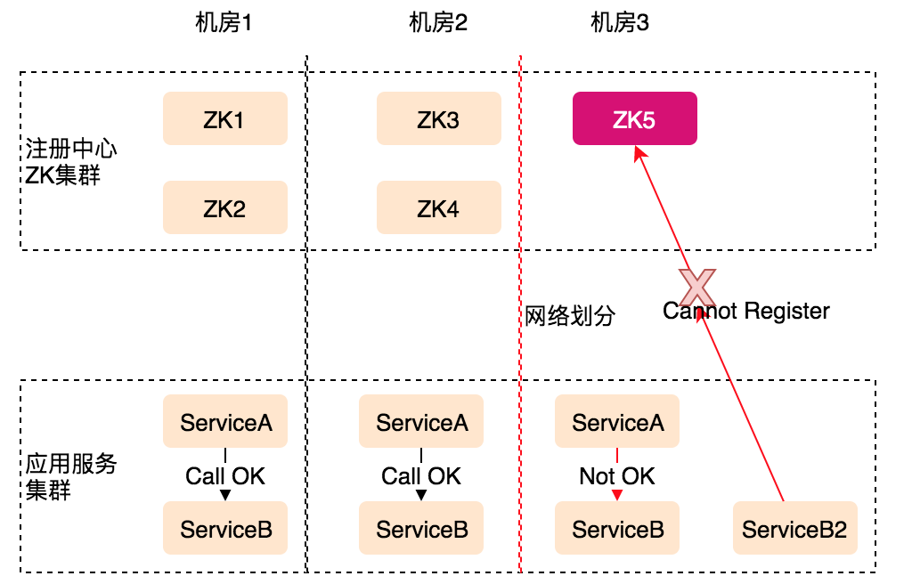
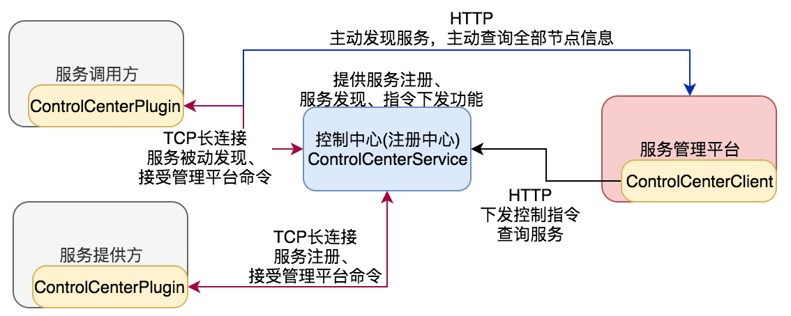
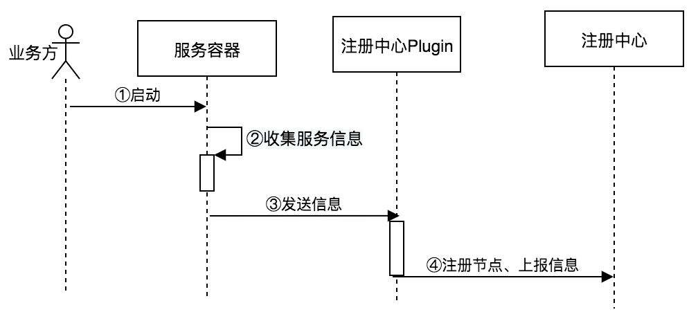
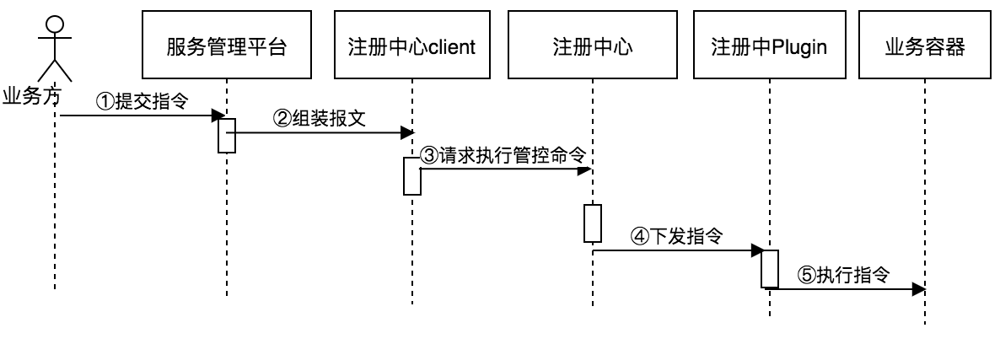
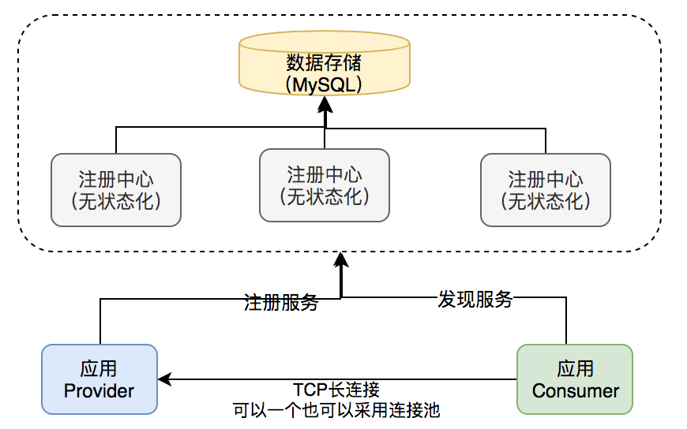

注册中心设计与实践
ZooKeeper
Apache ZooKeeper is an effort to develop and maintain an open-source server which enables highly reliable distributed coordination.（高可用的分布式协调服务）
Zookeeper is a centralized service for maintaining configuration information, naming, providing distributed syschronization, and providing group services.
ZooKeeper定义：ZooKeeper是一个分布式的，开放源码的分布式应用程序协调服务，是Google的Chubby一个开源的实现（参考Paxos论文），它是集群的管理者，监视着集群中各个节点的状态，根据节点提交的反馈进行下一步合理操作。
ZooKeeper功能：文件系统（通过文件目录的形式管理ZooKeeper存储的内容）、通知机制、数据一致性的保证（ZAB）选择的是CP模型。
分布式程序协调服务，可以用在下面的场景：节点选主、配置管理、粗粒度分布式锁、服务注册、服务发现。
服务发现产品比较
| 对比纬度 | ZooKeeper | Etcd | Consul | Eureka | Nacos |
|---|---|---|---|---|---|
| CAP模型 | CP | CP | CP | AP | CP/AP |
| 数据一致性 | ZAB（Paxos） | Raft | Raft | 不支持 | |
| 多数据中心 | 不支持 | 不支持 | 支持（Gossip） | 支持 | |
| 多语言支持 | SDK客户端 | HTTP/gRPC | HTTP/DNS | HTTP | |
| Watch支持 | 支持 | Long Polling | Long Polling | Long Polling | |
| KV存储 | 支持 | 支持 | 支持 | 不支持 | |
| 服务健康检查 | 心跳 | 心跳 | 服务状态、内存、磁盘等 | 需要显示配置 | |
| 自身监控 | 不支持 | metrics | metrics | metrics | |
| SpringCloud支持 | 支持 | 支持 | 支持 | 支持 | |
| 自身语言 | Java | Go | Go | Java | |
| 社区支持 | 积极 | 积极 | 积极 | 现版本暂停 |
注册中心是AP还是CP
数据一致性需求
注册中心本质，Si=F(ServiceName)，输入ServiceName输出可用的Si(ip, port)列表。对数据一致性要求不是特别高，如果数据不一致，只是会造成节点流量不均衡。
那某个服务节点异常，而没有更新到注册中心上去？客户端通过服务降级去掉该节点。
分区容错性及可用性需求分析
ZooKeeper三机房5节点部署，当机房3出现网络划分。
- 1、ZK还是有4个节点，整体可用，但ZK5不可写（联系不上Leader）
- 2、机房3服务不可部署、启动、扩缩容
- 3、机房3服务A无法调用机房1和2的服务B，也不能调用本机房的服务B（如果新启动，不能读也不能写）
- 4、注册中自身为保脑裂（P）下数据一致性（C）而放弃了可用性，导致了同机房的服务之间出现了无法调用，实际生产环境不可取
- 5、但实际上如果机房1、2、3之间都成了孤岛，每个机房的服务A都只能拿到本机房的服务B的IP列表，全都变成了本机房调用，反而会有好的服务调用链路RT效果
- 6、注册中心不能因为自身的任何原因破坏服务之间本身的可连通性，这是注册中心设计应遵循的铁律

互联网微服务规模剧增
当服务规模超过一定数量，ZooKeeper将不堪重负：
- 1、服务发布大量注册写请求
- 2、毫秒级服务健康状态的写请求
- 3、服务与注册中心的海量长连接
- 4、ZooKeeper写单节点（写Lader节点，读不是），不能水平扩展
解决方法：按业务功能垂直拆分ZK集群，但这样破坏了服务联通性，另外后面如果因业务调整再合并可能遇到ZooKeeper瓶颈而无法合并。
持久化存储和事务日志
调用方并不关心服务的历史地址列表、过去的健康状态，但ZooKeeper的ZAB协议对每个写请求都在节点上保存一个事务日志，而且最终要写到所有的节点上。另外ZooKeeper定期将内存数据dump到磁盘，保存数据的一致性和持久化。都很耗性能、存储但实际无用。
对于注册中心，仅需要存储服务的元数据信息（服务的版本、分组、所在的机房、权重、鉴权策略信息、服务标签等元信息），不需要存储过程数据。
探活机制
基于ZooKeeper注册中心的服务健康检查是利用ZooKeeper的Session活性心跳机制（客户端与服务端建立TCP长连接），以及结合Ephemeral[ɪˈfemərəl]ZNode的机制。
存在的问题：服务的健康情况判断失败，因为心跳线程和服务线程是两个不同的线程，可能存在心跳线程正常，但服务线程僵死的情况。
理想方案：废弃TCP心跳探活机制，提供更丰富的健康检查方案，服务健康与否的逻辑开放给服务提供方自定义。
注册中心容灾考虑
注册中心不能因为自身的任何原因破坏服务之间本身的可连通性。服务调用链路需要弱依赖注册中心，必须仅在服务发布、机器上下线、服务扩缩容等必要时才依赖。
客户端设计考虑容灾：
1、缓存数据机制（缓存内存并缓存本地）
2、ZK节点全干掉，应用服务是否正常work
3、原生ZK客户端并不具备这些功能，Netfix Curator比原生好一些
ZooKeeper适合场景
The King of Coordination for Big Data.
在粗粒度锁、分布式选主、主备高可用切换等不需要高TPS支持的场景（往往是OLTP）下有不可替代的作用。这些需求往往多集中在大数据、离线任务等相关的业务领域，因为大数据领域，讲究分隔数据集，并且大部分时间任务多进程/线程并行处理这些数据集，但是总有一些点上需要将这些任务和进程统一协调，这时候就是ZooKeeper发挥巨大作用的地方。（大部分是时间都在做Map，在Reduce阶段合并结果时需要ZooKeeper进行协调）
适用场景：大数据，分布式协调
不适用场景：大规模交易，大规模服务发现
在使用的有：Hadoop，Storm，HBase，Solr，Spark，Flink，Kafka，Mesos，Neo4J
自研注册中心
自研注册中心目标
1、提供可跨语言使用的服务注册和发现平台
2、提供执行下发功能对集群服务进行管理，管控指令存在时效性，指令是可损的
3、提供节点信息存储和扩展：服务器类型（物理机，虚拟机，Docker容器等），节点权重，服务分组等。服务分组：不同的服务提供方打上不同的服务分组标签，服务调用方在获取服务时带上分组标示，这样可以不同的业务调用不同的分组，实现业务层面物理隔离。

服务注册/发现流程
服务注册：

RPC/Web服务启动时，通过ControlCenterPlugin与控制中心服务建立并维护长连接，并自动上报服务节点信息。业务节点嵌入控制中心ControlCenterPlugin，基于Netty（netty-4.1.32）通过TCP协议与控制中心服务建立长连接，上报服务节点信息与扩展信息，服务端进行格式化及存储到MySQL。
服务发现：分主动发现和被动发现。主动发现，一般启动时调用服务管理平台主动发现服务。被动发现，服务节点变更时，控制中心通过TCP长连接，主动向ControlCenterPulgin推送节点变更类型及变更信息。
注册中心下发指令流程

服务指令分类：
- 服务节点指令：业务方通过服务管理平台，或者控制中心客户端（需鉴权）可发起屏蔽节点请求
- 服务**指令：降级指令（节点/服务/方法）、熔断、熔断恢复，限流（节点/服务/方法）
- 服务配置指令：服务相关配置
控制中心集群节点发现
基于Gossip协议。基于Gossip算法维护集群节点的自动发现、转移、心跳。
指令扩散
控制中心集群部署，服务管理平台通过HTTP下发指令到某一台控制中心后，需要把指令扩散到其它的控制中心。因为控制中心是无中心、无状态化的，业务节点分散连接到控制中心的某一节点。指令扩散方式：
方案一：基于TCP长连接
控制中心内部任意两台主机间建立TCP长连接。控制中心某一个节点接收到指令后，在集群内部进行服务指令同步。
方案二：基于消息队列
控制中心某一节点接收到指令后，发布服务指令到消息队列，控制中心服务集群全部节点从消息队列接收服务指令。完全可用由服务管理平台执行下发指令到消息队列，控制中心订阅集群消息。
考虑到控制中心节点不会很多，可用采用TCP的形式，不用再额外引入消息队列，另外指令延迟小。但这种形式实现难度大一些。
高可用设计
一、ControlCenterPlugin
1、ControlCenterPlugin与ControlCenterService维护长连接，当与ControlCenterService断开时，重新连接，通过域名解析的形式，请求到其它节点
2、服务节点信息本地缓存，应对ControlCenterService全部挂掉的情况
3、重连失败时报警
二、ControlCenterService
1、服务集群通过Gossip协议检测成员存活状况
2、当成员死亡时，ControlCenterPlugin与ControlCenterService连接断开，重新连接，同时进行上报
调用方与服务端的调用
简易注册中心：

服务端注册服务：服务端上报ServerName，IP，Port，注册中心收后保存在MySQL表(server_name, ip, port)中。
调用方发现服务：通过ServerName获取对应的IP和Port，判断该IP和Port对应的长连接是否存在，如果不存在就创建连接。
Consumer调用Provider有两种形式：
1、可以通过连接池的形式，比如配置连接池的最大值和最小值，一个TCP连接在同一时刻只处理一个RPC请求，处理完之后连接退回连接池
2、通过单一TCP连接并发处理所有的PRC请求。
Dubbo采用是这种形式，如何做呢？
Dubbo协议在客户端针对所有的Service类，默认是使用单一Netty长连接来处理对这些Service类中方法的RPC调用请求，即所有Service共享这个单一netty长连接。而在客户端，如在web环境中，任何一个时刻，可能存在多个线程对该Service进行并发调用，这些请求都是通过该单一Channel发送和获取结果的，而Netty所有请求都是异步，那么dubbo如何保证这些并发线程能正确获取到自己的请求结果，而不会造成数据混乱呢？核心实现为：
a、客户端Request通过AtomicLong生成的当前进程全局唯一id，服务端响应回传该id；
b、客户端通过FUTURES静态ConcurrentHashMap保存调用id和异步结果DefaultFuture之间的关系，服务端响应时，查询根据Response的回传请求id，获取该response对应的DefaultFuture，通过await和signal机制实现请求发起线程和结果获取线程之间的通信，最终请求发起线程得到最终的结果。